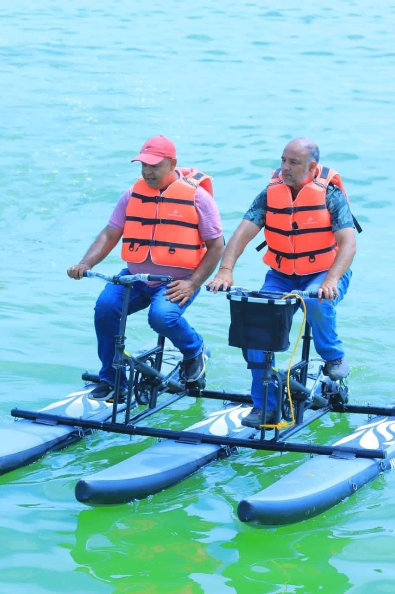
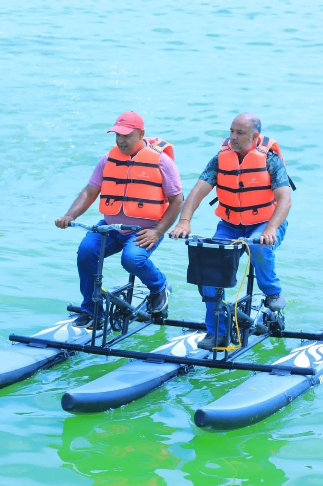

Welcome to Bharat Taal
Experience the serenity and beauty of one of Nepal's most stunning tourist destinations.
Plan Your VisitAbout Bharat Taal
Bharat Taal is gaining more tourist attractions in recent days. This lake has been named after the one of the Mayor of Bagmati Municipality, Bharat Kumar Thapa. It is was dream of Bagmati Municipality to make this lake a model artificial and excellent lake of Asia. The local bodies and the villagers are confident that the promotion of this lake will not only help in the development of tourism but also help in the economic prosperity of the town.
- Stunning sunsets
- Cycling adventures
- Boating experiences
- Horse riding
- Camping facilities
Gallery


 


Weather Forecast - Sarlahi
A weeks Weather Forecast
Contact Us
Address: Bharat Taal, [Bhagmati Muncipility], [Madhesh], Nepal
Phone: +977-123-456789
Email: info@bharattaal.com
Frequently Asked Questions
What is the best time to visit Bharat Taal?
The best time to visit Bharat Taal is from October to March when the weather is pleasant and ideal for outdoor activities.
Are there accommodation options near Bharat Taal?
Yes, there are several guesthouses and camping sites available near Bharat Taal. We can assist you in booking suitable accommodation.
What activities can I do at Bharat Taal?
Visitors can enjoy activities such as boating, fishing, bird watching, hiking, and camping at Bharat Taal.
Is Bharat Taal suitable for family visits?
Bharat Taal offers a safe and enjoyable environment for families, with various activities suitable for all age groups.
How do I reach Bharat Taal?
Bharat Taal is accessible by road. The nearest major city is [City Name], and from there, you can take a bus or hire a taxi to reach Bharat Taal.